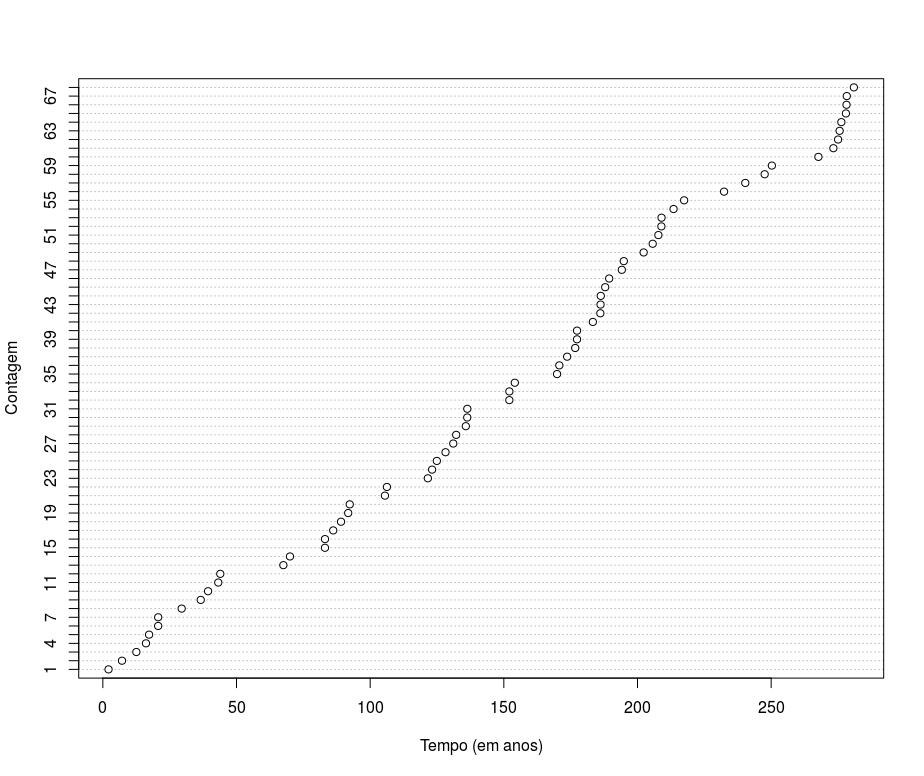
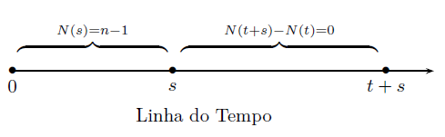
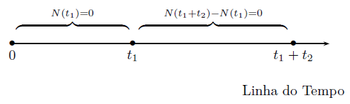
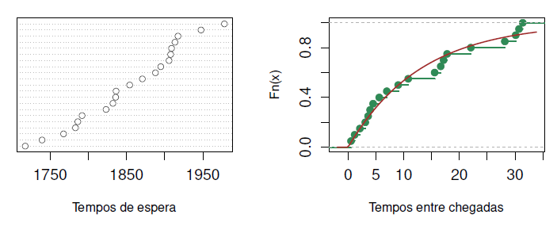
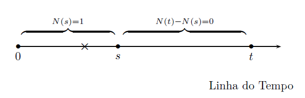
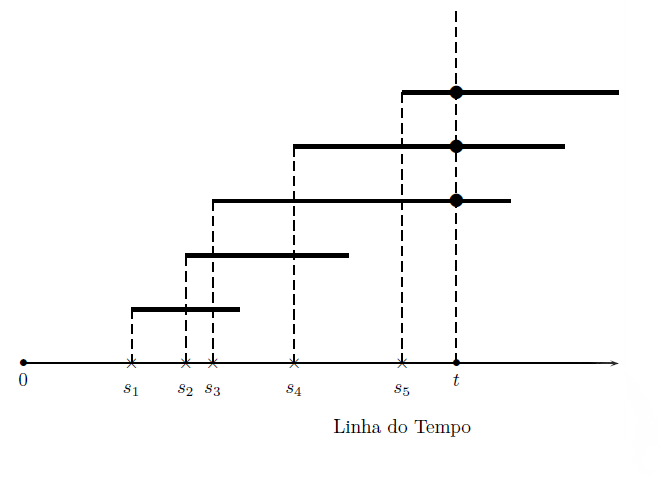
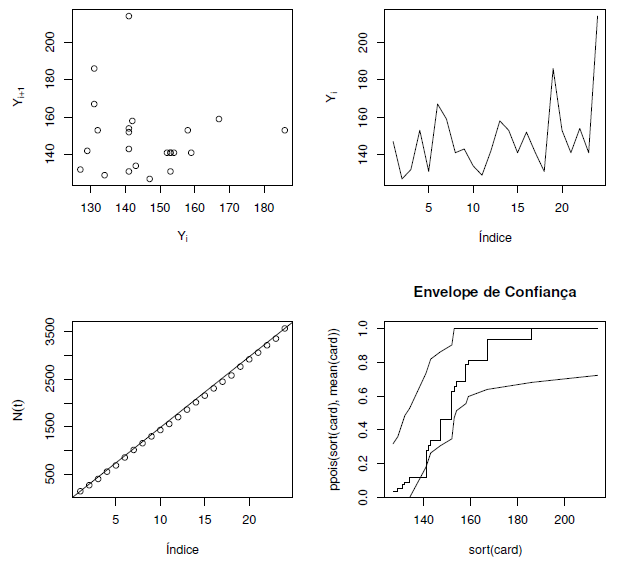
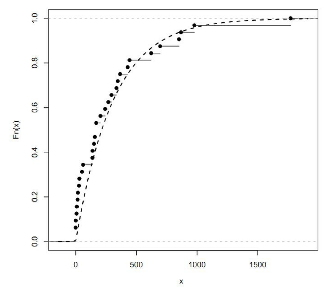

2 Processo de Poisson
2.1 Introdução
O número de acidentes aéreos por mês, de suicídios por ano e de novos casos de hanseníase possuem uma característica comum: todos são processos de contagem. Neste capítulo é apresentado um processo de contagem, denominado Processo de Poisson, definido formalmente a seguir.
Definição: Processo de Poisson
Definição 2.1 Um processo de contagem \(\{ N(t),t\geq 0 \}\) é um processo de Poisson (PP) se:
- \(N(0)=0\)
- O processo possui incrementos independentes e estacionários.
- Para qualquer intervalo de comprimento \(t\), teremos
O parâmetro \(\lambda\) é denominado taxa do processo.
Portanto, o PP é um processo de contagem com incrementos independentes e estacionários, cuja distribuição é Poisson com taxa proporcional ao tempo \(t\).
Exemplo: Terremotos no Estreito de Messina
Exemplo 2.1 O gráfico abaixo apresenta a sequência histórica de terremotos em uma região ao redor do Estreito de Messina, que divide a ilha da Sicília, na Itália continental. A tabela está limitada aos terremotos de magnitude 4,5 ou superior, durante o período de 1700-1980. Os dados estão em frações de ano (ou seja, a parte fracionária vezes 365 dá o dia da ocorrência dentro do ano).
Seja \(n(t)\) o número de terremotos observados até o tempo \(t\). O gráfico acima mostra os pares \((t, n(t))\). Note o comportamento aproximadamente linear. Lembremos que em um PP, \(E(N(t))=\lambda t\). Portanto, em média, existe uma relação linear entre \(N(t)\) e \(t\). Voltaremos neste exemplo posteriormente para verificar se ele pode ser modelado por um PP.
2.2 Tempos de Chegada e de Espera
2.2.1 Definições e propriedades
O tempo de chegada, denotado por \(T_{n}\), é o tempo transcorrido entre a chegada da \((n-1)\)-ésima e da \(n\)-ésima ocorrência. Seu comportamento pode revelar características importantes sobre o processo. Em especial, se \(\{N(t),t>0\}\) é um PP, temos a seguinte proposição.
Proposição
Proposição 2.1 Consideremos um processo de Poisson e sejam \(T_1,T_2,T_3,\ldots\) os tempos de chegada dos eventos 1, 2, 3\(\ldots\). Então:
Os tempos de chegada são identicamente distribuídos, com \(T_i\sim\hbox{Exponencial}(\lambda)\), i.é, \[f_{T_i}(t)=\lambda e^{-\lambda t},\lambda>0,t>0.\] onde \(\lambda\) é a taxa do processo de Poisson.
Os tempos de chegada são independentes.
Demonstração: Temos:
- Comecemos com o primeiro tempo de chegada. Notemos que \(T_1>t\) implica que a primeira chegada só ocorreu após o tempo \(t\). Isto quer dizer que não ocorreram chegadas antes de \(t\). Disto, \[\begin{align*} P(T_1>t)&=P(N(t)=0)=e^{-\lambda t}. \end{align*}\] Como \[F_{T_1}(t)= 1-P(T_1>t)=1-e^{-\lambda t},\] temos que \[f_{T_1}(t)=\frac{d}{dt}F_{T_1}(t)=\lambda e ^{-\lambda t}.\] Portanto, \(T_1\sim\hbox{Exponencial}(\lambda)\).
Agora, suponha que \(T_{n-1}\sim \hbox{Exponencial}(\lambda)\) (o que é verdade para \(n=1\)). Observe a figura abaixo.

Considere que o tempo de chegada da \(n\)-ésima observação é maior que \(t\) unidades de tempo. Se sabemos que o tempo da \((n-1)\)-ésima ocorrência foi \(s\), sabemos também que a \(n\)-ésima ocorrência ocorreu depois do tempo \(t+s\). Logo, não houveram ocorrências no intervalo \((s,t+s]\), fazendo com que \(N(t+s)-N(s)=0\). Mas, como o processo possui incrementos estacionários, temos que \(N(t+s)-N(s)\sim N(t)-N(0)\equiv N(t)\). Assim,
\[\begin{align*} P(T_n > t)&=\int_0^{\infty}P(T_{n}>t| T_{n-1}=s)f_{T_1}(s)ds\\ &=\int_0^{\infty}P(T_{n}>t| T_{n-1}=s)\lambda e^{-\lambda s}ds\\ &=\int_{0}^{\infty}P(N(t+s)-N(s)=0)\lambda e^{-\lambda s}ds, \left(\hbox{ incrementos estacionários}\right)\\ &=\int_0^{\infty}P(N(t)=0)\lambda e^{-\lambda s}ds \\ &=\int_0^{\infty}e^{-\lambda t}\lambda e^{-\lambda s}ds=e^{-\lambda t}\underbrace{\int_0^{\infty}\lambda e^{-\lambda s}ds}_{1}=e^{-\lambda t} \end{align*}\]logo, por indução teremos que \(T_n\sim\hbox{Exponencial}(\lambda)\) para todo \(n\leq 1\).
- Como os incrementos são independentes, os tempos entre as ocorrências também devem ser independentes. Por exemplo, considere o evento \(\{T_1>t_1\}\cap \{T_2>t_2\}\), esquematizado abaixo:

Então, \[\begin{align*} P(T_1>t_1,T_2>t_2)&=P(N(t_1)=0,N(t_1 + t_2)- N(t_)) \end{align*}\]
Podemos também definir o tempo transcorrido até a \(n\)-ésima chegada.
Definição: Tempo de Espera
Definição 2.2 Para um processo de Poisson, seja \[S_n=\sum_{i=1}^{n}T_i.\] Denominamos \(S_n\) como o tempo de espera até o \(n\)-ésimo evento.
Para motivar a definição, se \(S_n>t\), então o \(n\)-ésimo evento não ocorreu até o tempo \(t\). A diferença entre \(T_n\) e \(S_n\) deve ficar clara: \(T_n\) é o tempo transcorrido entre as observações \(n\) e \(n-1\), enquanto que \(S_n\) é o tempo transcorrido, desde o começo do processo, até a ocorrência do \(n\)-ésimo evento.
Como \(T_i\sim\hbox{Exponencial}(\lambda)\), e \(T_i\) e \(T_j\) são independentes para todo \(i\neq j\), teremos que \(S_n\sim\hbox{Gama}(n,\lambda)\).
Exemplo: Imigrantes
Exemplo 2.2 Suponha que pessoas imigram para determinada área segundo um processo de Poisson com taxa uma por dia.
- Qual o tempo esperado até a chegada do 10º imigrante?
- Qual a probabilidade de que o tempo gasto entre a chegada do 10º e do 11º imigrante exceda dois dias?
Solução:
O tempo esperado até a décima chegada é a esperança do 10º tempo de espera, ou seja \[E(S_{10})=\frac{10}{\lambda}=10\]
O tempo entre chegadas possui distribuição exponencial com média 1. Assim \[P(T_{11}>2)=e^{-2\times 1}\]
Exemplo: Terremotos no Estreito de Messina - continuação
Exemplo 2.3 A figura abaixo (lado esquerdo) mostra os tempos de espera dos terremotos com magnitude maior que 5. Já o lado esquerdo mostra a distribuição acumulada (linha verde) dos respectivos tempos entre chegadas, com a função de distribuição exponencial ajustada (linha marrom).

Para ajustar a exponencial acima, utilizamos o estimador de máxima verossimilhança para \(\lambda\), dado por \[\hat{\lambda}=\frac{n-1}{\sum_{i=1}^{n}t_i}=0,072.\]
De modo análogo, estimamos que \(N(t)\sim\hbox{Poisson}(0,072 t)\).
2.2.2 Distribuição condicional dos tempos de chegada
Inicialmente, considere que apenas um evento ocorreu no intervalo \((0,t]\). Gostaríamos de saber qual a probabilidade deste evento ter ocorrido no tempo \(s\), com \(s<t\).
Notemos que o evento \(\{S_1<s,N(t)=1\}\) é equivalente ao evento no qual ocorre uma chegada no intervalo \((0,s]\) e nenhuma chegada no intervalo \((s,t]\), conforme ilustra a figura abaixo, na qual \(\mathbf{\times}\) indica o primeiro tempo de espera:

Disto, teremos
\[\begin{align*} P(S_1<s|N(t)=1)&=\frac{P(S_1<s,N(t)=1)}{P(N(t)=1)}=\frac{P(N(s)=1,N(t)-N(s)=0)}{P(N(t)=1)}\\ &=\frac{P(N(s)=1)P(N(t)-N(s)=0)}{P(N(t)=1)}\\ &=\left. \frac{e^{-\lambda s}(\lambda s)^1}{1!} \times \frac{e^{-\lambda (t-s)}(\lambda (t-s))^0}{0!} \right/ \frac{e^{-\lambda t}(\lambda t)^1}{1!} \\ &\frac{e^{\lambda s}(\lambda s)e^{-\lambda(t-s)}}{e^{-\lambda t}\lambda t}=\frac{s}{t}. \end{align*}\]Assim, \[f_{S_1|N(t)=1}(s)=\frac{d}{ds}P(S_1<s|N(t)=1)=\frac{d}{ds}\left(\frac{s}{t}\right)=\frac{1}{t},\] e \((S_1|N(t)=1)\sim \hbox{Uniforme}(0,t)\). Intuitivamente, se sabemos que houve apenas uma ocorrência no intervalo \((0,t)\), devido aos incrementos estacionários e independentes esta chegada seria um ponto escolhido ao acaso dentro deste intervalo.
Agora discutiremos a distribuição dos tempos de espera \(\mathbf{S} =\{S_1,\ldots,S_n\}\) condicionadas ao evento \(N(t)=n\). Seja \(h_i\), \(i=1,\ldots,n\) um valor positivo pequeno o suficiente para garantir que \(s_{i-1}<s_{i}-h_i< S_i <s_i\). Neste caso, para garantir que \(N(t)=n\), cada intervalo \((s_i-h_i,s_i]\) terá exatamente uma ocorrência e os intervalos \((0,s_1-h_1]\), \((s_n,t]\) e \((s_{i-1},s_{i}-h_{i}]\) para \(i=,2\ldots,n\) não terão ocorrências. Portanto, dado \(N(t)\):
- Probabilidade de exatamente uma ocorrência em cada intervalo \((s_i-h_i,s_i]\), \(i=1,\ldots,n\):
\[ \begin{align*} p_1&=P(N(s_i)-N(s_i-h_i)=1,i=1,\ldots,n)\\ &=P(N(h_i)=1,i=1,\ldots,n)\\&=\prod_{i=1}^ne^{-\lambda h_i}(\lambda h_i)\\ &=\prod_{i=1}^ne^{-\lambda h_i}(\lambda h_i)\\ &= \lambda^n e^{-\lambda \sum_{i=1}^{n}h_i} \prod_{i=1}^{n}h_i \end{align*} \]
- Probabilidade de nenhuma ocorrência nos demais intervalos:
\[ \begin{align*} p_2&= P\left(N(s_1-h_1)=0, N(t)-N(s_n)=0,\left\{N(s_i-h_i)-N(s_{i-1})=0,i=2,\ldots,n\right\}\right)\\ &= e^{-\lambda (s_1-h) }\times e^{-\lambda (t-s_n)}\times\prod_{i=2}^n e^{-\lambda (s_i-s_{i-1}-h_i)}\\ &= e^{-\lambda (s_1-h_1) }\times e^{-\lambda (t-s_n)}\times e^{-\lambda (s_n-s_1 -\sum_{i=2}^n h_i)}\\ &=e^{-\lambda t}e^{\lambda \sum_{i=1}^n h_i} \end{align*} \]
Logo,
\[\begin{align*} P( s_i-h_i<S_i< s_i, i=1,\ldots,n|N(t)=n)&=\frac{p_1p_2}{P(N(t)=n)}\\ &=\left. \lambda^n e^{-\lambda t} \prod_{i=1}^n h_i \right/ \frac{e^{-\lambda t}(\lambda t)^n}{n!}\\ &=\frac{t^n}{n!}\prod_{i=1}^n h_i. \end{align*}\]Como a densidade de \(f(s_1,\ldots,s_n|N(t)=n)\) pode ser obtida derivando a função de distribuição, e como
\[ \begin{align*} \frac{\partial^n}{\partial \mathbf{s}}F(s_1,\ldots,s_n|N(t)=n)&=\lim_{\mathbf{h}\rightarrow\mathbf{0}}\frac{P( s_i-h_i<S_i< s_i, i=1,\ldots,n|N(t)=n)}{\prod_{i=1}^nh_i}\\ &=\lim_{\mathbf{h}\rightarrow\mathbf{0}}\left.\frac{t^n}{n!}\prod_{i=1}^n h_i\right/\prod_{i=1}^{n}h_i=\frac{t^n}{n!} \end{align*} \]
teremos que \[f(s_1,\ldots,s_n|N(t)=n)=\frac{t^n}{n!},\quad 0<s_1<\cdots<s_n\leq t,\] ou seja, \(\mathbf{S}|N(t)=n\) tem a mesma distribuição que as estatísticas de ordem de uma amostra de variáveis aleatórias independentes com distribuição Uniforme\((0,t)\) de tamanho \(n\) \[f(s_1,\ldots,s_n|N(t)=n)=\frac{t^n}{n!},\quad 0<s_1<\cdots<s_n<t.\]
Exemplo: Número de indivíduos no sistema
Exemplo 2.4 Indivíduos entram em um sistema segundo um PP com taxa \(\lambda\). Seja \(Y_i\) tempo que o indivíduo \(i\) permanece no sistema. Considere que os tempos \(Y_1,Y_2\ldots,\) são variáveis aleatórias independentes e identicamente distribuídas e que são independentes dos tempos de chegada.
Seja \(N(t)\) o número de indivíduos que entraram no sistema até o tempo \(t\). Considerando que \(S_i\) é o tempo de espera do \(i\)-ésimo indivíduo. Este indivíduo abandona o sistema no tempo \(S_i+Y_i\).
Seja \(X(t)\) o número de indivíduos que estão no sistema no tempo \(t\). Podemos criar a variável \[Z_i(t)=\left\{\begin{array}{ll} 1,&S_i+Y_i\geq t \\ 0,& S_i+Y_i<t\end{array} \right.\] Note que \(Z_i(t)=1\) é equivalente a dizer que o \(i\)-ésimo indivíduo ainda está no sistema no tempo \(t\). No diagrama abaixo temos 5 chegadas. As linhas horizontais mais grossas mostram o tempo que cada indivíduo permaneceu no sistema (\(S_i+Y_i\)). Neste diagrama, apenas 3 indivíduos estavam no sistema no tempo \(t\).

Note que \[X(t)=\sum_{i=1}^{N(t)}Z_i.\] Portanto,
\[ \begin{align*} P(X(t)=x)&=\sum_{n=0}^\infty P(X(t)=x|N(t)=n)P(N(t)=n)\\ &=\sum_{n=0}^\infty P\left(\sum_{i=1}^{N(t)}Z_i=x|N(t)=n\right)P(N(t)=n)\\ &=\sum_{n=0}^\infty P\left(\sum_{i=1}^{n}Z_i=x|N(t)=n\right)P(N(t)=n). \end{align*} \]
Devemos então descobrir a distribuição de \(Z_i|N(t)\). Seja \(U_1,\ldots,U_n\) uma amostra de variáveis independentes com distribuição Uniforme\((0,t)\) e sejam \(U_{(1)},\ldots,U_{(n)}\) as respectivas estatísticas de ordem. Então,
\[\begin{align} P\left(\sum_{i=1}^{N(t)}Z_i=z|N(t)=n\right) &= P\left(\sum_{i=1}^{N(t)}I(S_i+Y_i\geq t)=z|N(t)=n\right)\\ &= P\left(\sum_{i=1}^{n}I(S_i+Y_i\geq t)=z|N(t)=n\right)\\ &= P\left(\sum_{i=1}^{n}I(U_{(i)}+Y_i\geq t)=z\right), \end{align}\]
mas, como \(\sum_{i=1}^{n}U_{(i)}=\sum_{i=1}^{n}U_{i}\), teremos
\[\begin{align*} P\left(\sum_{i=1}^{N(t)}Z_i=z|N(t)=n\right) &= P\left(\sum_{i=1}^{n}I(U_{i}+Y_i\geq t)=z\right). \end{align*}\] Ora, é imediato que \[I(U_{i} + Y_i \geq t)\sim\hbox{Bernoulli}( p(t) ),\]
onde
\[\begin{align} p(t)&=P\left( I(U_{i}+Y_i\geq t)=1\right)= P\left( U_{i}+Y_i\geq t\right)\\ &=\int_0^t P\left( U_{i}+Y_i\geq t\right|U_i=y)f_U(u)du\\ &=\int_0^t P\left( u+Y_i\geq t\right|U_i=u)f_U(u)du, \end{align}\]
e, como \(U_i\) é independente de \(Y_i\),
\[\begin{align} p(t)&=\int_0^t P\left( u+Y_{i}\geq t\right)f_U(u)du\\ &=\int_0^t P\left( Y_{i}\geq t-u\right)f_U(u)du\\ &=\int_0^t P\left( Y_{i}\geq t-u\right)\frac{1}{t}du\\ &=\int_0^t P\left( Y_{i}\geq y\right)\frac{1}{t}dy\\ &=\int_0^t [1-F_Y(y)]\frac{1}{t}dy\\ \end{align}\]
Como as variáveis \(U_i\) e \(Y_i\) são independentes e identicamente distribuídas, temos que
\[\sum_{i=1}^{N(t)}Z_i|N(t)\sim\hbox{Binomial}\left(N(t),p(t)\right).\]
Podemos finalmente concluir a distribuição de \(X(t)\):
\[ \begin{align*} P(X(t)=x)&=\sum_{n=0}^\infty P\left(\sum_{i=1}^{n}Z_i=x|N(t)=n\right)P(N(t)=n)\\ &=\sum_{n=x}^\infty P\left(\sum_{i=1}^{n}Z_i=x|N(t)=n\right)P(N(t)=n)\\ &=\sum_{n=x}^\infty {n \choose x} p(t)^x \left[1-p(t)\right]^{n-x}\frac{e^{-\lambda t}(\lambda t)^n}{n!}\\ &=\sum_{n=x}^\infty \frac{n!}{x!(n-x)!} p(t)^x \left[1-p(t)\right]^{n-x}\frac{e^{-\lambda t}(\lambda t)^n}{n!}\\ &=\frac{e^{-\lambda t}p(t)^x}{(1-p(t))^xx!}\sum_{n=x}^\infty \frac{\left(\lambda t [1-p(t)]\right)^n}{(n-x)!}\\ &=\frac{e^{-\lambda t}p(t)^x}{(1-p(t))^xx!}\sum_{w=0}^\infty \frac{\left(\lambda t [1-p(t)]\right)^{w+x}}{w!}\\ &=\frac{e^{-\lambda t}p(t)^x}{(1-p(t))^xx!}[\lambda t(1-p(t))]^x\sum_{w=0}^\infty \frac{\left(\lambda t(1-p(t))\right)^{w}}{w!}\\ &=\frac{e^{-\lambda t}p(t)^x}{x!}(\lambda t)^x\sum_{w=0}^\infty \frac{\left(\lambda t(1-p(t))\right)^{w}}{w!}\\ &=\frac{e^{-\lambda t}p(t)^x}{x!}(\lambda t)^xe^{\lambda t(1-p(t))}\\ &=\frac{e^{-\lambda tp(t)}[\lambda t p(t)]^x}{x!} \end{align*} \]
Exemplo
Exemplo 2.5 Pessoas chegam a um grande supermercado segundo um PP com taxa 40 por hora. O tempo que elas permanecem no supermercado possui distribuição Exponencial com média 0,75 horas. Considerando que o supermercado abre as 8h, qual é o número esperado de clientes às 12h?
Solução: Seja \(N(t)\) o número de clientes que entraram no supermercado até o tempo \(t\). Então,
\[N(t)\sim\hbox{Poisson}(\lambda t).\]
Seja \(Y_i\) o tempo que o \(i\)-ésimo cliente leva para deixar o supermercado. Como
\[E(Y_i)=\frac{1}{\alpha}=0,75,\]
teremos que \(Y_i\sim\hbox{Exponencial}(1/0,75)\equiv\hbox{Exponencial}(4/3)\). Como
\[F_Y(y)=1-e^{-\alpha y}=1-e^{-\frac{4}{3}t},\]
teremos que
\[ \begin{align*} p(t)&=\frac{1}{t}\int_0^t[1-F_Y(y)]dy=\frac{1}{t}\int_0^t e^{-\frac{4}{3}y}dy\\ &=\frac{3}{4t}[1-e^{-\frac{4}{3}t}]. \end{align*} \]
Deste modo, o número de cliente no supermercado para qualquer tempo é
\[X(t)\sim\hbox{Poisson}\left( \lambda t p(t)\right)\equiv \hbox{Poisson}\left( 30[1-e^{-\frac{4}{3}t}]\right).\]
Considerando que o tempo \(t=0\) é equivalente as 8h, teremos que 12h é equivalente a \(t=4\). Assim,
\[E(X(4))=30[1-e^{-\frac{4}{3}4}]=29,85516.\]
Portanto, são esperados aproximadamente 30 clientes as 12h dentro do supermercado.
2.3 Soma de Processos de Poisson
Desejamos estudar o comportamento da ocorrência de óbitos por tuberculose no Amazonas. Comecemos considerando apenas os dois processos de contagem a seguir:
- \(N_1(t):\) número de óbitos por tuberculose respiratória com confirmação até tempo \(t\);
- \(N_2(t):\) número de outros tipos de óbitos por tuberculose até tempo \(t\);
Após observar os dados, poderíamos verificar se cada um destes processos pode ser modelado como um PP. Entretanto, existe outro processo de contagem envolvido: o total de óbitos por tuberculose até o tempo \(t\). Denotando este processo por \(N(t)\), podemos caracterizá-lo a partir das seguintes proposições.
Proposição
Proposição 2.2 Considere que os existem dois tipos de eventos, 1 e 2, que ocorrem independentemente e sejam \(p\) e \(1-p\) suas respectivas probabilidades de ocorrência. Sejam \(N_1(t)\) e \(N_2(t)\) seus respectivos processos de contagem. Então, se \(N(t)=N_1(t) + N_2(t)\) for um PP com taxa \(\lambda\), teremos:
- \(N_1(t)\) e \(N_2(t)\) também serão um PP com taxas \(\lambda p\) e \(\lambda(1-p)\) respectivamente, onde \(p\) é a probabilidade de uma ocorrência ser do tipo 1.
- \(N_1(t)\) e \(N_2(t)\) são independentes.
Demonstração: Para quaisquer variáveis aleatórias discretas \(X\) e \(Y\), temos que \[P(X=x)=\sum_{y=-\infty}^{\infty} P(X=x|Y=y)P(Y=y),\] e o resultado continua verdadeiro se \(X\) for um vetor de variáveis aleatórias discretas. Fazendo, na expressão acima, \(X=(N_1(t),N_2(t))\) e \(Y=N(t)\), teremos \[\begin{align*}
&P(N_1(t)=n,N_2(t)=m)= \sum_{k=0}^{\infty}P(N_1(t)=n,N_2(t)=m|N(t)=k)P(N(t)=k),
\end{align*}\]
onde a soma começa em zero porque a probabilidade de \(N(t)<0\) é nula. Embora a soma seja feita para todo \(k\), as probabilidades só serão diferentes de zero se \(N(t)=n+m\), uma vez que \(N_1(t)=n\) e \(N_2(t)=m\). Portanto,
\[ \begin{align*} P(N_1(t)=n,N_2(t)=m)&= P(N_1(t)=n,N_2(t)=m|N(t)=n+m)\\ &\times P(N(t)=n+m) \\ &= P(N_1(t)=n,N(t)-N_1(t)=m|N(t)=n+m)\\ &\times P(N(t)=n+m) \end{align*} \]
Dado que \(N(t)=n+m\), os eventos \(\{N_1(t)=n, N(t)-N_1(t)=m\}\) e \(\{N_1(t)=n\}\) são equivalentes. Deste modo \[P(N_1(t)=n,N_2(t)=m|N(t)=n+m)=P(N_1(t)=n|N(t)=n+m).\]
A segunda probabilidade acima está relacionada com o número de ocorrências do evento do tipo 1 até o tempo \(t\), considerando que o número total de ocorrências (sem descriminar os eventos) é conhecido. Considerando que a probabilidade de ocorrência dos eventos do tipo 1 é \(p\) e que as ocorrências são independentes, teremos que \[N_1(t)|N(t)\sim\hbox{Binomial}\left(N(t),p\right).\] Assim, \[\begin{align} P(N_1(t)=n,N_2(t)=m)&= P(N_1(t)=n|N(t)=n+m)P(N(t)=n+m)\notag \\ &={n+m\choose n}p^{n}(1-p)^{m}\frac{e^{-\lambda t}(\lambda t)^{n+m}}{(n+m)!}\notag \\ &=\frac{e^{-\lambda pt}(\lambda pt)^n}{n!}\times \frac{e^{-\lambda (1-p)t}(\lambda (1-p)t)^m}{m!}\label{eq::prova_soma_contagem_2} \end{align}\] Como a distribuição fatorou em duas distribuições Poisson, temos que \(N_1(t)\sim\hbox{Poisson}(\lambda p t)\), \(N_2(t)\sim\hbox{Poisson}(\lambda (1-p) t)\) e os processos são independentes.
Portanto, podemos verificar se o total dos eventos possui distribuição Poisson. Se isto for verdadeiro, será imediado que cada um dos dois processos de contagem também serão PP.
A proposição acima pode ser generalizada:
Proposição
Proposição 2.3 Consideremos \(k\) eventos distintos e sejam \(N_{1}(t),\ldots,N_k(t)\) seus respectivos processos de contagem. Então, se \(N(t)=N_1(t)+\cdots +N_k(t)\) for um PP, teremos que \(N_i(t),i=1,\ldots, k\) também será um PP com taxa \(\lambda p_i\), com \(p_i>0\) e \(\sum_{i=1}^{k}p_i=1\). Temos que \(p_i\) será a probabilidade de que o evento do tipo \(i\) aconteça. Além disso, teremos que os processos \(N_i(t)\) serão independentes.
Exemplo: Casos de Hanseníase em Manaus
Exemplo 2.6 A abaixo mostra o número de casos de hanseníase registrados em 2007 e 2008 na cidade de Manaus por região. Podemos definir \(N_N(t),N_S(t),N_L(t)\) e \(N_O(t)\) como sendo o número de casos de hanseníase observados até o instante \(t\) nas regiões norte, sul, leste e oeste, respectivamente. Seja \(N(t)\) o total de casos de hanseníase registrados em Manaus entre 2007 e 2008. Realizamos um teste de Kolmogorov-Smirnov para testar se os incrementos do processo \(N(t)\), dados na coluna Total, possuem distribuição Poisson. O p-valor deste teste foi igual a 0,507, o que nos trás evidências de que \(N(t)\sim\hbox{Poisson}(7,375)\). Assumindo que esta hipótese é verdadeira, teremos pela Proposição 2.5 que os processos \(N_N(t),N_S(t),N_L(t)\) e \(N_O(t)\) também são processos de Poisson, com as seguintes taxas estimadas: 2(norte), 0,625(sul), 2,083(leste) e 2,667(oeste). Assim, a probabilidade de que um caso de hanseníase tomado ao acaso ocorra em determinada região é: 0,271(norte), 0,084(sul), 0,282(leste) e 0,361(oeste).
2.4 Inferência para o Processo de Poisson
Habitualmente, os dados de um PP são apresentados de duas formas: através do registro dos incrementos, contados em intervalos disjuntos e geralmente de comprimentos iguais, ou através do registro dos tempos de chegada e/ou espera.
2.4.1 Inferência para incremento
Em um estudo realizado em XXX, os autores levantaram evidencias de que as morte por paradas cardíacas seguem um processo de Poisson. Para verificar se esse comportamento também é válido para o estado do Amazonas, coletamos as informações sobre os óbitos no estado. A seguinte tabela mostra o número de óbitos por parada cardíaca em cada mês dos anos de 2009 e 2010.
Na tabela acima, o número de observações em cada mês é um incremento do processo de contagem \(\{N(t),t>0\}\), onde \(N(t)\) é o número de óbitos por parada cardíaca registrados até o tempo \(t\).
2.4.1.1 Estimação para \(\lambda\)
Seja \(X(s,t)\) o número de ocorrências no intervalo \((s,t]\). É comum que os dados estejam representados em um tabela, identificando o intervalo e o número de ocorrências de cada intervalo. Também é usual que estes intervalos sejam disjuntos e contíguos. Com essas considerações, sejam \((s_i,t_i]\) uma sequência de intervalos disjuntos de comprimento \(h_i=h\), com \(i=1,\ldots,n\). Consideremos então que, nos tempos \(t_1,\ldots,t_k\), foram registrados os valores \(N(t_1),\ldots,N(t_k)\). Assim, temos a amostra de incrementos \(Y_i=X(t_i,t_{i-1}),\), \(i=1,\ldots,n\), onde \(t_0=0\). Agora, seja \(y_i\) o valor observado do \(i\)-ésimo incremento. Como os incrementos são independentes, teremos que \[P(N(t)=k)=P(Y_1=y_1,\ldots,Y_n=y_n)=\prod_{i=1}^{n}\frac{e^{-\lambda h}(\lambda h)^{y_i}}{y_i!}.\] A verossimilhança deste processo é \[\begin{align*} L(\lambda)\propto e^{-nh\lambda}\lambda^{\sum_{i=1}^{n}y_i}. \end{align*}\] Encontraremos o EMV para \(\lambda\). O logaritmo da função de verossimilhança será \[\begin{equation} l(\lambda)=-nh\lambda +\log(\lambda)\sum_{i=1}^{n}y_i, \end{equation}\] e \[\begin{align*} \frac{d}{d\lambda}l(\lambda) &= -nh +\frac{1}{\lambda}\sum_{i=1}^{n}y_i \\ \frac{d^2}{d\lambda^2}l(\lambda)&= -\frac{1}{\lambda^2}\sum_{i=1}^{n}y_i. \end{align*}\] Fazendo a primeira derivada de \(l(\lambda)\) igual a zero, teremos \(\hat{\lambda}=\sum_{i=1}^{n}Y_i/nh=\bar{Y}/h\). A derivada segunda aplicada em \(\lambda=\hat{\lambda}\) é negativa, mostrando que \(\hat{\lambda}\) é ponto de máximo. Portanto, o estimador de máxima verossimilhança para \(\lambda\) é \(\hat{\lambda}\). Teremos que \[\begin{align*} E(\hat{\lambda})&=\frac{1}{h}E(Y_1)=\lambda \end{align*}\] logo, \(\hat{\lambda}\) é não viesado. Além disso, \[\begin{align} Var(\hat{\lambda})&=\frac{1}{h^2}Var(\bar{Y})=\frac{\lambda}{nh}, \end{align}\] logo, o estimador é consistente e seu erro padrão pode ser estimado por \[\begin{equation} \hat{EP}(\hat{\lambda})=\sqrt{\frac{\hat{\lambda}}{nh}}. \end{equation}\] Existem diversas estratégias para construir intervalos de confiança para \(\lambda\). Uma delas, seria utilizar a aproximação normal \[\sqrt{nh}\frac{\hat{\lambda}-\lambda}{\sqrt{\hat{\lambda}}}\approx \hbox{Normal}(0,1)\] (decorrente do TCL). Com isso, um intervalo com confiança aproximada de \((1-\alpha)\) para \(\lambda\) é dado por \[\left(\hat{\lambda}-z_{1-\alpha/2}\sqrt{\frac{\hat{\lambda}}{nh}};\hat{\lambda}-z_{\alpha/2}\sqrt{\frac{\hat{\lambda}}{nh}}\right).\] Via de regra, a aproximação acima é válida para \(\hat{\lambda}>20\).
No exemplo do número de óbitos por ataque cardíaco, temos que todos os incrementos tem o mesmo comprimento (\(h=1\) mês). O valor estimado para \(\lambda\) é, \[\hat{\lambda}=148,75.\] com um erro-padrão estimado de \(2,489\). Um intervalo aproximado com confiança \(95\%\) para \(\lambda\) é \[[144,66;152,85].\]
2.4.1.2 Verificando se os dados seguem um processo de Poisson
Lembremos que um processo de Poisson possui incrementos independentes e estacionários, e que \(E[N(t)]=\lambda t\). Abaixo, seguem quatro gráficos que podem nos auxiliar a verificar se estas condições estão satisfeitas.
- Um diagrama de dispersão entre \(Y_1,Y_2,\ldots,Y_{n-1}\) e \(Y_2,Y_3,\ldots,Y_{n}\): se houver qualquer tendência entre \(Y_i\) e \(Y_{i-1}\) existem evidências para suspeitarmos da hipótese de independência.
- Um diagrama de dispersão entre os índices \(1,2,\ldots,n\) e \(Y_1,Y_2\ldots,Y_n\): dados dispersos em torno de \(\hat{\lambda}\) dão evidências de estacionaridade.
- Um diagrama de dispersão entre os índices \(1,2,\ldots,n\) e \(N(t_1),N(t_2)\ldots,N(t_n)\): um comportamento linear dá indícios de que \(E[N(t)]=\lambda t\).
- Um envelope de confiança para a função de distribuição em conjunto com a função de distribuição de uma Poisson com taxa \(\hat{\lambda}\): se a distribuição da Poisson estiver dentro do envelope, existem evidências de os incrementos seguem uma distribuição Poisson com taxa \(\hat{\lambda}\).

2.4.1.2.1 Testes de hipóteses
Se os incrementos \(Y_1,\ldots,Y_n\) são provenientes de um processo de Poisson, então eles devem ser independentes e estacionários.
2.4.1.3 Inferências para \(T\)
Sejam \(T_1,\ldots,T_n\) uma amostra dos tempos de chegadas de um processo de Poisson com taxa \(\lambda\). A função de verossimilhança para \(\lambda\) é dada por
\[ \begin{align*} L(\lambda)&=\prod_{i=1}^{n}f(t_i|\lambda)=\lambda^{n}e^{-\lambda\sum_{i=1}^{n}t_i}\\ &=\lambda^{n}e^{-\lambda S_n} \end{align*} \]
O logaritmo da verossimilhança será \[\begin{equation*}l(\lambda)=n\log(\lambda) -\lambda S_n \end{equation*}\] e sua primeira e segunda derivada é:
\[ \begin{align*} \frac{d}{d\lambda}&=\frac{n}{\lambda} -S_n \\ \frac{d^2}{d\lambda^2}&=-\frac{n}{\lambda^2}. \end{align*} \]
Analisando as duas derivadas, vemos que \(\hat{\lambda}=n/S_n\) é ponto de máximo e portanto é EMV.
Pelo Exercício Exercício 6.17, sabemos que \(Z=\lambda\hat{\lambda}\sim\hbox{GI}(n,n)\). Assim, podemos calcular \(a\) e \(b\) tais que \(P(a<Z<b)=1-\alpha\) e criar o intervalo de confiança \[\begin{equation*} \left( \frac{a}{\hat{\lambda}}, \frac{b}{\hat{\lambda}}\right). \end{equation*}\]
2.4.2 Suicídios no MIT
Quando ocorre um suicídio no MIT - Massachusetts Institute of Technology - diversas áreas da comunidade pedem uma açao da administração. Se os suicídios foram provenientes de um processo aleatório, tais ações não deveriam ser da competência da administração, apesar de que programas para reduzir a taxa global de suicídios no MIT devem sempre ser insentivados.
Em (CHEW, et al.), os autores gostariam de saber se os suicídios ocorridos no MIT poderiam ser modelados segundo um processo de Poisson. Apesar do MIT não manter estatísticas sobre a saúde de seus estudantes e pessoal em geral, suicídios são casos excepcionais e dados sobre estes puderam ser obtidos no Office of the Dean for Students Affairs. Os autores pesquisaram os suicídios ocorridos entre os anos de 1964 e 1991. Alguns dados estavam incompletos, uma vez que apenas o ano e o mês do suicídio foram registrados. Para estes dados, os autores assumiram que o suicídio ocorreu no dia 15. As datas do histórico se suicídios são mostradas na Tabela a seguir:
| Data | \(T_i\) | Data | \(T_i\) | Data | \(T_i\) |
|---|---|---|---|---|---|
| 10/06/1964 | - | 26/07/1974 | 428 | 20/10/1986 | 16 |
| 15/11/1964 | 158 | 27/07/1975 | 366 | 02/10/1987 | 347 |
| 17/10/1965 | 336 | 12/12/1975 | 138 | 03/10/1987 | 1 |
| 17/03/1966 | 151 | 02/02/1976 | 52 | 22/10/1987 | 19 |
| 04/06/1967 | 444 | 16/10/1977 | 622 | 08/04/1988 | 169 |
| 19/10/1969 | 868 | 03/04/1978 | 169 | 15/04/1988 | 7 |
| 15/07/1970 | 269 | 08/02/1983 | 1772 | 15/06/1988 | 61 |
| 19/03/1973 | 978 | 30/11/1983 | 295 | 15/06/1988 | 0 |
| 15/04/1973 | 27 | 21/06/1984 | 204 | 15/10/1990 | 852 |
| 15/05/1973 | 30 | 18/05/1986 | 696 | 15/06/1991 | 243 |
| 24/05/1973 | 9 | 04/10/1986 | 139 | 15/06/1991 | 0 |

2.5 O Processo de Poisson Composto
Clientes chegam em uma loja de conveniências segundo um processo de Poisson com taxa \(\lambda\). Cada cliente gasta uma quantidade \(D_i\) de dinheiro, independente dos demais. Neste caso, podemos estar interessados em estudar a quantidade de dinheiro ganho pelo loja ao longo do tempo, ou seja, na variável \(Y(t)=\sum_{i=1}^{N(t)}D_i\). Este é um típico exemplo de um processo de Poisson composto.
Definição
Definição 2.3 Seja \(Y(t)=\sum_{i=1}^{N(t)}D_i\), onde as variáveis aleatórias \(D_i\)s são independentes e identicamente distribuídas e seja \(\{N(t),t\geq 0\}\) um processo de Poisson. Então, processo estocástico \(\{Y(t),t>0\}\) é denominado processo de Poisson composto.
Um modo de analisar o processo \(\{Y(t),t\geq 0\}\) seria encontrar a expressão analítica de sua distribuição, ou seja
\[ \begin{align} F(y(t))&=\sum_{n=0}^{\infty}P(Y(t)\leq y(t)|N(t)=n)P(N(t)=n)\\&=\sum_{n=0}^{\infty}P(Y(t)\leq y(t)|N(t)=n)\frac{e^{-\lambda t}(\lambda t)^n}{n!}. \end{align} \]
Em geral, esta distribuição não possui forma analítica e métodos computacionais são necessários para estimar a distribuição. Entretanto, apenas o conhecimento dos momentos de \(Y(t)\) podem ser úteis para realizar inferências sobre média, variância, assimetria e curtose. Podemos encontrar a função geratriz de momentos de \(Y(t)\), desde que exista a função geratriz de momentos de \(D\). De fato, seja \(M_D(r)\) a função geratriz de momentos de \(D\). Então
\[ \begin{align*} M_{Y(t)}(r)&=E(e^{Y(t)r})=E[E(e^{Y(t)r}|N(t))]= E[E(e^{r\sum_{i=1}^{N(t)}D_i}|N(t))]\\ &=E[\prod_{i=1}^{N(t)}E(e^{rD_i}|N(t))]=E[\prod_{i=1}^{N(t)}M_{D_i}(r)]= E[(M_{D}(r))^{N(t)}]\\ &=\sum_{n=0}^{\infty}(M_{D_i}(r))^n\frac{e^{-\lambda t}(\lambda t)^n}{n!} =e^{-\lambda t}\sum_{n=0}^{\infty} \frac{(M_D(r)\lambda t)^n}{n!}\\ &=e^{\lambda t( M_D(r) -1)}. \end{align*} \]
Como usual, o \(k\)-ésimo momento é obtido calculando \((d^k/d r^k)M_{y(t)}(r)|_{r=0}\). Por exemplo, o primeiro momento é calculando fazendo
\[ \begin{align*} E(Y(t))&=\left.\frac{d}{dr}M_{Y(t)}(r)\right|_{r=0}= \lambda t e^{\lambda t( M_D(r) -1)}\left.\frac{d}{dr}M_{D}(r)\right|_{r=0}=\lambda t E(D), \end{align*} \]
e o segundo momento será, \[\begin{align*} E(Y(t)^2)&=\left.\frac{d^2}{dr^2}M_{Y(t)}(r)\right|_{r=0}\\&= e^{\lambda t( M_D(r) -1)}\left(\lambda t\frac{d}{dr}M_{D}(r)\right)^2 +\lambda te^{\lambda(M_D(r)-1)} \left.\frac{d^2}{dr^2}M_D(r)\right|_{r=0}\\ &=(\lambda t E(D))^2 + \lambda t E(D^2). \end{align*}\]
Assim, a variância será
\[ \begin{align*} Var(Y(t))&= \lambda t E(D^2) \end{align*} \]
Exemplo: Número de vítimas fatais em acidentes aéreos
Exemplo 2.7 Consideremos os dados sobre o número de acidentes aéreos no Brasil em 2008. Suponha que que este é um processo de Poisson. Sua taxa está estimada em 12,83. Seja \(D_i\) o numero de vítimas fatais no \(i\)-ésimo acidente. A distribuição de frequências do número de acidentes fatais por acidente é dado na Tabela a seguir:
| Nº de vítimas fatais | 0 | 1 | 2 | 3 | 4 | 5 |
|---|---|---|---|---|---|---|
| Frequência observada | 127 | 9 | 12 | 1 | 3 | 1 |
Os valores estimados para \(E(D)\) e \(Var(D)\) são, respectivamente, 0,38 e 1,136. Assim, teremos que \[\hat{E}(Y(t))=\hat{\lambda}\hat{E}(D)t = 4,916t\]
\[\hat{Var}(Y(t))=\hat{\lambda}\hat{E}(D^2)t=14,583t.\] Além disso, fazendo \(\mu(t)=E(Y(t))\) e \(\sigma^2(t)=Var(Y(t))\), temos que um intervalo (aproximado) com \((1-\alpha)\%\) de confiança aproximado para \(\mu(t)\) é dado por \[(Y(t)\pm z_{1-\alpha/2}\hat{\sigma}(t))=(Y(t)\pm 3,818z_{1-\alpha/2}\sqrt{t})\] e, em particular, para o período em estudo, temos que \(Y(12)=59\) e um intervalo com 95% de confiança para \(\mu(t)\) é \((33,07;84,92)\).
2.6 Generalizações do Processo de Poisson
Podemos generalizar um PP relaxando alguma de suas hipóteses. Se assumimos que \(E(N(t))=\lambda(t)\), onde a função \(\lambda(.)\) não é linear, teremos um {}. Se os incrementos do processo forem estacionários, mas não forem independentes, teremos um processo de ponto estacionário. Neste curso, apresentaremos apenas a primeira destas generalizações.
2.6.1 O Processo de Poisson Não-Homogêneo
O processo de Poisson visto até agora possui taxa constante ao longo do tempo. Isto pode não ser verdade para todo processo de Poisson. Por exemplo, clientes podem chegar em um supermercado com intensidades diferentes em relação ao horário, como por exemplo em horário comercial, ou em épocas como começo/fim de mês. Nestes casos, quando permitimos que a taxa seja função de \(t\), temos um processo de Poisson não-homogêneo.
Definição
Definição 2.4 O processo estocástico \(\{N(t),t\leq 0\}\) será um processo de Poisson não-homogêneo se:
- \(N(0)=0\)
- \(\{N(t),t\geq 0\}\) possui incrementos independentes
- A taxa do processo é dada por \(\lambda(t)\) e \(N(t)\sim\hbox{Poisson}(m(t))\), onde \[m(t)=\int_0^t \lambda(s)ds,\] é denominada função do valor médio do processo.
Notemos que esse processo é uma generalização do processo de Poisson, com o processo homogêneo sendo um caso particular, quando \(\lambda(t)=\lambda\;\forall t>\geq 0\).
Exemplo
Exemplo 2.8 Considere um restaurante que só abre a noite. Clientes chegam segundo um processo de Poisson não-homogêneo com taxas (por hora) \[\begin{align*} \lambda(t)=\left\{\begin{array}{l}10,\quad 18\leq t < 19\\ 15,\quad 19\leq t < 21 \\ 12\quad 21\leq t< 22\end{array}\right. \end{align*}\]
Pergunta-se:
- Qual o número esperado de clientes em uma noite?
- Qual a probabilidade de que nenhum cliente vá ao restaurante entre 18h e 18:30h?
- Qual a probabilidade de que nenhum cliente vá ao restaurante entre as 18:30h e 19:30h?
Resolução:
Seja \(N(t)\) o número de clientes que entraram no restaurante até o tempo \(t\). Sem perda de generalidade, notemos que os seguintes horários são equivalentes:
| Horário Normal | 18h | 19h | 21h | 22h |
|---|---|---|---|---|
| Tempo após a abertura | 0 | 1 | 3 | 4 |
Não importa qual tipo de horário você vai escolher, uma vez que a distribuição não vai se alterar. A segunda opção, que considera \(t=0\) como o instante no qual o restaurante abre, é uma escolha usual e iremos adotá-la. Notemos que a taxa do processo será reescrita como
\[\begin{align} \lambda(t)=\left\{\begin{array}{l}10,\quad 0\leq t < 1\\ 15,\quad 1\leq t < 3 \\ 12\quad 3\leq t< 4\end{array}\right. \end{align}\]
- O período de uma noite de trabalho corresponde ao intervalo entre \((0,4)\) horas de funcionamento do estabelecimento. Logo, queremos calcular \(E(N(4))\). Teremos que \[\begin{align*} E(N(4))&=\int_0^4 \lambda(t)dt =\int_0^1 \lambda(t)dt+\int_1^3 \lambda(t)dt+\int_3^4 \lambda(t)dt \\ &=10 +30 + 12 =52. \end{align*}\]
- O intervalo entre 18h e 18:30h corresponde ao intervalo da primeira meia hora, isto é, entre 0 e 0,5 no segunda escala. Assim, a probabilidade de não chegarem clientes neste intervalo é \[\begin{align*} P(N(1/2)=0)=e^{-10/2} \end{align*}\]
- Neste caso, o intervalo entre 18:30h e 19:30h corresponde ao intervalo \((0,5;1,5)\). Notemos que queremos o evento \(\{N(3/2)-N(1/2)=0\}\). Como \[\begin{align*} m(3/2)-m(1/2)&=\int_{1/2}^{3/2}\lambda(t)dt=\left. 10t\right|_{1/2}^{1} + \left. 15t\right|_{1}^{3/2}\\ &= \frac{10}{2}+\frac{15}{2}=\frac{25}{2}=12,5, \end{align*}\] logo, \[\begin{align*} P(N(3/2)-N(1/2)=0)=e^{-12,5} \end{align*}\]
2.7 Exercícios
Seção 2.1
Exercício 2.1
- Eventos ocorrem segundo um processo de Poisson com taxa 2 por hora.
- Qual a probabilidade de que nenhum evento ocorra entre 20h e 21h?
- Começando ao meio-dia, qual o tempo esperado para o quarto evento ocorrer?
- Qual a probabilidade de que dois ou mais eventos ocorram entre as 18h e às 20h?
Exercício 2.2 Carros atravessam certa rodovia de acordo com um processo de Poisson com taxa \(3\) por minuto. Érica demora 2 minutos para atravessar esta rodovia. Se ela atravessar a rodovia sem olhar para os lados, então qual a probabilidade de que ela se envolva em um acidente? (considere que se ela estiver na rodovia quando um carro passar, então ela sofrerá um acidente).
Exercício 2.3 Clientes chegam a um banco segundo um processo de Poisson com taxa \(\lambda\). Suponha que dois clientes chegaram durante a primeira hora. Qual é a probabilidade de que
- Ambos tenham chegado durante os primeiros 20 minutos?
- Pelo menos um chegou durante os primeiros 20 minutos?
Seção 2.3
Exercício 2.4 Potenciais clientes solicitam uma linha telefônica segundo um processo de Poisson com taxa 70 pedidos por dia. Entretanto, um pedido só é aceito se o propenso cliente não tiver na lista do SPC/SERASA. A experiência diz que de cada 100 clientes 30 deles estão com o nome nesta lista.
- Qual é o valor esperado de solicitações aceitas em um mês (de 30 dias)?
- Em um dia foram registradas 50 solicitações. Qual a probabilidade de que metade delas seja aceita?
Exercício 2.5 Pulsos chegam a um contador Geiger de acordo com um processo de Poisson com taxa de três por minuto. Cada partícula tem uma probabilidade 2/3 de ser contabilizada. Seja \(N(t)\) o número de pulsos registrados até o tempo t (em minutos).
- \(P(N(t)=0)=?\)
- \(E(N(t))=?\)
Exercício 2.6 Carros passam por uma rodovia segundo um processo de Poisson com taxa um por minuto. Se 5% dos carros são vans, então
- Qual a probabilidade de que pelo menos um van passe durante uma hora?
- Dado que dez vans passaram em uma hora, qual o número esperado de carros que passam pela rodovia naquela hora?
- Se 50 carros passaram em uma hora, qual é a probabilidade de que cinco deles sejam vans?
Exercício 2.7 Suponha que o número de erros tipográficos em um novo texto tem distribuição Poisson com média \(\lambda\). Dois revisadores lêem o texto independentemente. Suponha que cada erro é encontrado pelo revisador \(i\) com probabilidade \(p_i\), \(i=1,2\). Seja \(X_1\) o número de erros que foram encontrados pelo revisor 1, mas que não o foram pelo revisor 2. Seja \(X_2\) o número de erros encontrados pelo revisor 2 que não foram notados pelo revisor 1. Seja \(X_3\) o número de erros encontrados por ambos os revisadores e \(X_4\) o número de erros que não foram encontrados por nenhum deles.
- Encontre a distribuição conjunta de \(X_1,X_2,X_3,X_4\).
- Mostre que \[\frac{\mathbb{E}(X_1)}{\textcolor{blue}{\mathbb{E}(X_3)}}=\frac{1-p_2}{p_2}\hbox{ e }\frac{\mathbb{E}(X_2)}{\mathbb{E}(X_3)}=\frac{1-p_1}{p_1}\]
Suponha que \(\lambda,p_1\) e \(p_2\) são ambos desconhecidos.
- Usando \(X_i\) como estimador para \(\mathbb{E}(X_i)\), apresente os estimadores para \(\lambda,p_1\) e \(p_2\).
- Encontre um estimador para \(X_4\), o número de erros não encontrado nenhum dos revisadores.
Exercício 2.8 Homens e mulheres entram em um supermercado segundo processos de Poisson com taxas 3 e 4 respectivamente. Começando num dado momento \(s\), seja \(t\) o momento da chegada do segundo homem. Calcule a probabilidade de que o número de mulheres que chegaram no intervalo \((s,t]\) seja menor que 3.
Exercício 2.9 Uma empresa tem dois tipos de clientes. Clientes chegam de acordo com um processo de Poisson com taxa \(\lambda\). Num dado momento \(t\), a probabilidade do cliente ser do tipo I é \(P_1(t)=e^{-t}\) e a probabilidade dele ser do tipo II é \(P_2(t)=1-e^{-t}\). Seja \(N_1(t)\) o número de clientes do tipo I que chegaram no intervalo \((0,t]\). Calcule a distribuição de \(N_1(t)\).
Exercício 2.10 José está pescando no lago. Ele pega peixes de acordo com um processo de Poisson com taxa 3 (peixes por hora) e os classifica como grandes e pequenos. A probabilidade de que um peixe seja grande é \(1/3\). Calcule a probabilidade de que:
- Em 2 horas ele vai pegar 3 peixes grandes e pelo menos um pequeno;
- Em algum momento ele vai ter exatamente \(i\) peixes grandes e \(j\) pequenos.
Exercício 2.11 Numa região, os furacões ocorrem de acordo com um processo de Poisson com taxa 3 por unidade de tempo nos anos “bons” e com taxa 5 nos anos “ruins”. Suponha que o próximo ano vai ser bom com probabilidade 0,3. Seja \(N(t)\) o número de furacões nas primeiras \(t\) unidades de tempo do próximo ano.
- Calcule \(\mathbb{P}(N(t)=n)\).
- \(\{N(t),t\geq 0\}\) um processo de Poisson?
- Se o próximo ano começar com 3 furacões até o tempo \(t\) , calcule a probabilidade condicional de que o ano é “bom”.
Exercício 2.12 ejam \(N_1(t)\) e $N_2(t) $dois processo de Poisson independentes com respectivas taxas \(\lambda_1\) e \(\lambda_2\). Seja \(N(t)=N_1(t)+N_2(t)\). Mostre que \(N(t)\) é um processo de Poisson com taxa \(\lambda_1 +\lambda_2\) e calcule a probabilidade do primeiro evento do processo \(N(t)\) ser do processo \(N_1(t)\).
Exercício 2.13 Em uma cidade fictícia, chamadas telefônicas solicitando um policial chegam a uma central segundo um processo de Poisson com taxa 10 por hora.
- Destas chamadas, 8% são trotes. Encontre a média e a variância do número de trotes recebidos pela central em 10 horas de trabalho.
- Qual é o tempo esperado entre duas ligações quaisquer? E qual é o tempo esperado entre dois trotes?
- Qual é a probabilidade de que a próxima ligação seja um trote?
- Ocorreu um trote as 14h. Qual a probabilidade de que o segundo trote ocorra as 14:30h?
- A probabilidade de que exista um policial disponível para cada ligação é \(p\). Se houver um policial disponível, ele irá até o local solicitado. Caso contrário, a solicitação não será atendida. Qual é o número esperado de solicitações não atendidas em 10 horas?
- Em 10 horas, qual é o número esperado de vezes que polícia perde tempo atendendo solicitações provenientes de trotes?
- Em um dia foram recebidas 100 ligações. Qual é a probabilidade de que tenha ocorrido 50 trotes (basta escrever a expressão, não é necessário fazer toda a conta).
Seção 2.6
Exercício 2.14 A cada trimestre uma rede de lojas classifica seus clientes em duas categorias: A e B. Os clientes do tipo A são aqueles que gastaram, em média, mais de R$ 1.000,00 em compras naquele trimestre e os clientes do tipo B são os que gastaram, em média, menos que R$ 1.000,00. Mário visita uma das lojas da rede segundo um processo de Poisson com taxa 2 vezes por semana. A cada visita, ele gasta um valor normalmente distribuído com média R$ 40,00 e desvio padrão R$ 5,00. Suponha que o dinheiro gasto em cada visita é independente das visitas anteriores (suponha também que cada mês possui quatro semanas).
- Em geral, qual é a classificação esperada de Mário?
- Dado que no primeiro trimestre Mário foi 25 vezes à loja, qual a distribuição do dinheiro gasto por Mário na loja naquele período? Qual a probabilidade dele ter sido classificado como cliente do tipo A?
Exercício 2.15 Um sistema tem um número aleatório de falhas que iremos supor ter distribuição Poisson com média \(c\). Cada uma dessas falhas irá, independentemente, causar a falha do sistema em um tempo aleatório com distribuição \(G\). Quando uma falha do sistema ocorre, suponha que o sistema é imediatamente reparado.
- Qual é a distribuição do número de falhas até o tempo \(t\)?
- Qual é a distribuição do número de falhas que ainda estão no sistema até o tempo \(t\)?
- As variáveis aleatórias em (1) e (2) são dependentes ou independentes? Justifique.
Exercício 2.16 Eventos ocorrem segundo um processo de Poisson não homogêneo cuja função de valor médio é dada por \[m(t)=t^2 +2t,\quad t\geq 0.\] Qual é a probabilidade de que \(n\) eventos ocorram entre os tempos \(t=4\) e \(t=5\)?
Exercício 2.17 Uma loja abre às 8. De 8h às 10h os clientes chegam segundo um processo de Poisson com taxa 4 por hora. Entre 10h e 12h eles chegam segundo um processo de Poisson com taxa 8 por hora. De 12h às 14h eles chegam segundo uma taxa crescente de oito por hora às 12h até dez por hora às 14h. Das 14h às 17h a taxa cai de dez por horas às 14h até quatro por hora as 17h. Determine a distribuição de probabilidade do número de clientes que entram na loja em um determinado dia.
Exercício 2.18 Uma companhia de seguro paga apólices de seguro de vida segundo um processo de Poisson com taxa 5 por semana. Se a quantidade de dinheiro paga por cada apólice tem distribuição exponencial com média R$ 2.000 qual é a média e a variância da quantidade de dinheiro paga pela agencia de seguro após 4 semanas? Faça as suposições necessárias.
Exercício 2.19 Um restaurante universitário (RU) funciona das 11:30h até 14:30h. Alunos chegam ao RU segundo um processo de Poisson não-homogêneo com taxa:
- constante, igual a 50 alunos/hora, das 11:30 as 12h;
- linearmente crescente, sendo igual a 50 alunos/hora as 12h e chegando a 150 alunos/hora as 13h;
- linearmente decrescente, sendo igual a 150 alunos/hora as 13h e chegando a 40 alunos/hora as 14h;
- constante, igual a 40 alunos/hora, das 14h as 14:30h.
Encontre o número médio de alunos que frequentam o RU.
Exercício 2.20
Exercício 2.20 Passageiros embarcam no aeroporto Eduardo Gomes segundo um processo de Poisson com taxa 100 por hora. Seja \(B_i\) o peso (em quilos) da bagagem do \(i\)-ésimo passageiro, assumindo \(B_1,B_2,\ldots,\) independentes com \(B_i\sim \hbox{Uniforme}(10,30)\).
Seja \(Z\) peso total da bagagem embarcada em 2 horas no aeroporto. Encontre \(E(Z)\) e \(Var(Z)\).
O passageiro pagará excesso de bagagem se \(B>22Kg\). Mostre que o número de passageiros que pagam excesso é um processo de Poisson (basta explicar) e calcule a sua taxa.
Exercício 2.21 Um restaurante funciona das 19h as 23h. Clientes chegam segundo um processo de Poisson não homogêneo com as seguintes taxas:
- Entre as 19h e 20h, a taxa permanece constante em 10 clientes.
- Entre as 20h e 22h, a taxa é \(\lambda(t)=-t^2+42t -430.\).
- As 22h a taxa é de 10 clientes, decrescendo linearmente até a taxa de 5 clientes as 23h.
Com base no que foi enunciado, responda:
- Qual o número esperado de clientes neste restaurante em um dia de funcionamento?
- Qual a probabilidade de que o restaurante não tenha clientes entre as 19h e 20h?
- Qual o número médio de clientes entre as 19h e 20h30min?
- A média e a variância do gasto de cada cliente são 20 reais e 500 reais\(^2\), respectivamente. Encontre a média e a variância do ganho esperado do restaurante em um dia de trabalho.
Exercícios Computacionais
Exercício 2.22 A abaixo mostra o número de homicídios dolosos ocorridos em Manaus nos anos de 2008 e 2009.
| Mês/Ano | 2008 | 2009 |
|---|---|---|
| Janeiro | 44 | 62 |
| Fevereiro | 41 | 46 |
| Março | 53 | 64 |
| Abril | 37 | 51 |
| Maio | 40 | 59 |
| Junho | 43 | 48 |
| Julho | 49 | 57 |
| Agosto | 51 | 47 |
| Setembro | 45 | 55 |
| Outubro | 57 | 64 |
| Novembro | 55 | 59 |
| Dezembro | 54 | 45 |
| Total | 569 | 657 |
- Mostre que existem evidências para supor que o número de homicídios dolosos mensais é um processo de Poisson.
- Construa um intervalo de confiança assintótico, com 95% de confiança, para estes dados.
- Construa um estudo de simulação, mostrando que esse intervalo de confiança é apropriado para esta situação.
Miscelânea
Exercício 2.23 Clientes chegam em uma loja 24h segundo um processo de Poisson com taxa \(10\) clientes por hora. A probabilidade de que algum destes clientes compre algo é de \(4/5\).
- Qual o número esperado de clientes em um dia? Em média, quantos clientes não compraram nada durante um dia?
- Qual é a distribuição do número de clientes que realmente gastam?
- Dois clientes entraram na loja durante a primeira hora. Qual é a probabilidade de que nenhum cliente entre na loja na próxima hora?
- Dez clientes entraram na loja. Qual é a probabilidade de que nenhum deles realize uma compra?